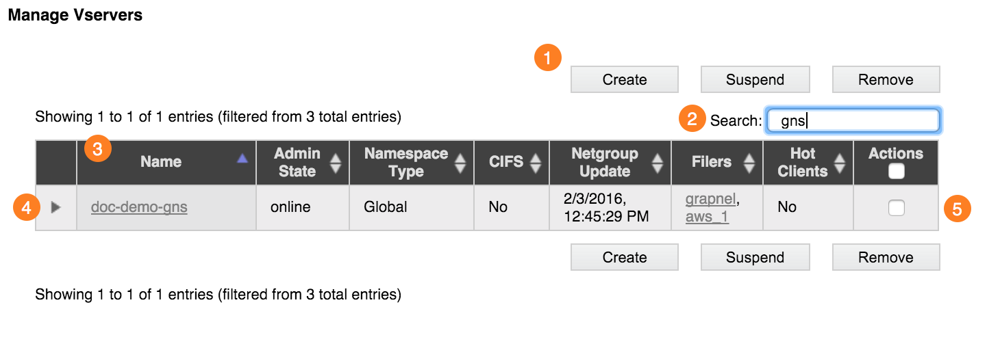
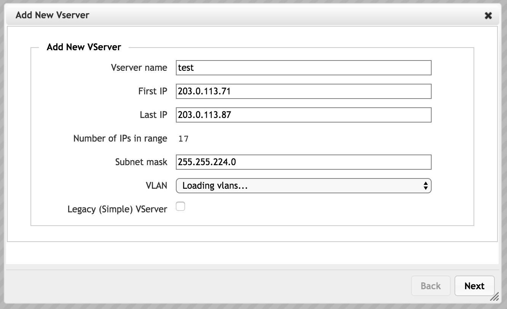

VServer > Manage VServers

The Manage VServers settings page gives a list of the cluster’s vservers.
You can filter the list to show only vservers whose attributes match the string typed in the search box (2).
{kind=link}
The buttons (1) above and below the list let you create a new vserver, suspend a vserver, or remove a vserver from the system. To use the buttons, first select one or more vservers by checking the Actions box (5) in the right column of the vserver’s table entry, then click the button for the action that you want to perform.
Identical sets of buttons appear at the top and bottom of the list for easier access when the list of vservers is long.
Click a column header (3) to sort the list by that column’s attribute.
Use the triangular control (4) in the left column to show or hide detailed information about that vserver.
Creating a VServer
Creating a vserver is the first step in configuring client access through the Avere cluster. (To learn more about vservers and their role in a cluster, read Creating and Working with VServers.)
You will need the following information:
The name that you want to use for the vserver
The range of client-facing IP addresses that the vserver will handle
Note
The set of client-facing IP addresses used for a virtual server must be manually assigned static IP addresses (not assigned by DHCP) and they must be in a contiguous range.
For a simple namespace vserver (a legacy configuration), you need the name of the core filer that you will use with this vserver. The core filer must be defined before you create the vserver; read Adding a New Core Filer to learn how to add a core filer to the system. (A standard vserver uses a global namespace and does not need to be linked to a core filer at creation time.)
If you use multiple VLANs, decide which VLAN you want this vserver to use.
These are the steps to create a new vserver:
From the Manage VServers page, choose Create. The Add New VServer dialog box appears.
Enter the new virtual server’s name in the VServer Name field.
The name can include letters, numbers, and punctuation, but not the following characters:
+ ' & + < ; \ >
The maximum length is 255 characters.
{kind=link}
Set the IP address range:
Specify the first and last values for the IP address range that this vserver will use to accept client requests.
Note
You can set additional address ranges for this vserver after creating it. Use the Client Facing Network page to add IP addresses. (If your system uses a legacy configuration with advanced networking disabled, you can have only one address range per vserver, but this situation is uncommon.)
As mentioned in the prerequisites section, the IP range must be contiguous and manually assigned (not assigned by DHCP).
Enter the subnet mask associated with this VLAN. (You can choose which VLAN to use in the next field.)
Optionally, select a VLAN from the drop-down VLAN list. (Advanced Networking must be enabled to create and select VLANs.)
The default VLAN is listed, along with any client-role VLANs that you created in the Cluster > VLAN page. The IP addresses in this range will be associated with the VLAN that you select.
Leave the Legacy (Simple) VServer box unchecked to create a standard vserver that uses a global namespace. This checkbox supports an older vserver technology, which cannot support multiple core filers and cannot create a virtual namespace for clients. Most systems do not require simple (legacy) vservers.
If you do need to create a vserver that uses the legacy technology, follow the instructions below for creating a legacy simple vserver.
Click Next to create the new server.
A message confirms that the vserver has been created.
The Add New VServer utility might prompt you to customize more settings. The remaining settings also can be made from other Avere Control Panel pages.
The Avere Control Panel might display alerts as the new vserver is added to the cluster. These alerts should resolve within a few minutes.
Simple Namespace Option (Legacy Configuration)
Most clusters do not include simple namespace vservers. If you are unsure whether or not you need one, contact Avere Global Services for more information.
If you need to create a simple namespace vserver, follow the steps in this section instead of following the directions in step 4 above.
The main difference between simple namespace and global namespace (GNS) vservers is how they represent back-end storage to clients. A simple namespace vserver handles requests for one core filer’s directories only, and shows clients the exact directory structure on the storage system. A GNS vserver handles requests in a client-side virtual namespace that is mapped to one or many core filers. Additional differences exist - for example, Avere OS’s data management features cannot be used with simple vservers.
To create a simple namespace vserver, select the Legacy (Simple) VServer checkbox. (Leave the box unselected to create a global namespace vserver.)
For the simple namespace option, you must specify the core filer.

Select a core filer from the drop-down list. The core filer must be already defined in the system.
Continue to step 5, above, to create the simple namespace vserver.